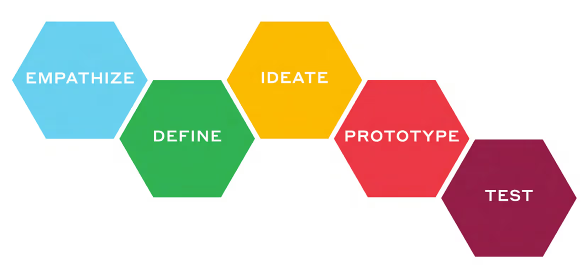
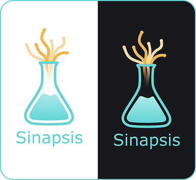
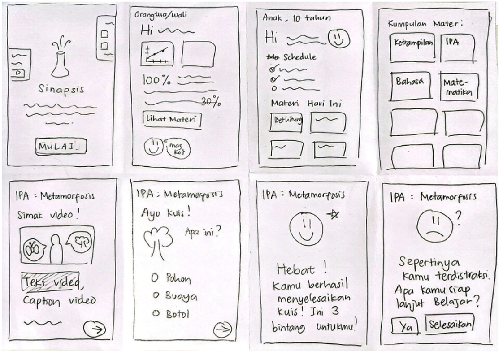
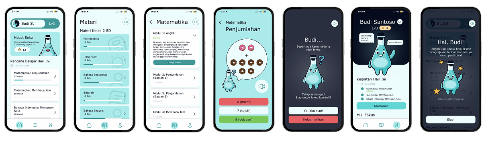
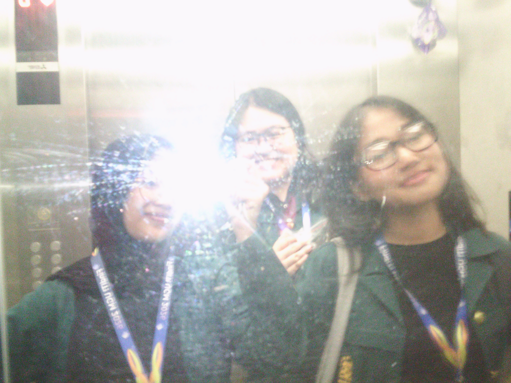

On Engineering Inclusivity
Introduction
Sinapsis is an adaptive learning ecosystem designed for UX FindIT! Competition 2026, created to address the systemic educational barriers faced by neurodivergent children (specifically those with Autism, ADHD, and Dyslexia) in Indonesia. For this project, our team conceptualized, designed, and tested an end-to-end digital learning experience.

Our product development workflow was anchored in the Design Thinking Framework—a five-stage human-centered approach that allowed us to iterate between understanding user needs and delivering an accessible digital platform.
Empathize
We began our research by asking:
How do neurodivergent children truly process information, and why do conventional digital learning platforms fail them?
In order to understand the spectrum of neurodiversity in Indonesia a bit better, we conducted semi-structured interviews with six key stakeholders: special education experts, shadow teachers, parents, and neurodivergent friends. From their lived experiences, we synthesized our qualitative data into an Empathy Map to capture what neurodivergent learners say, think, feel, and do.
Says
“I prefer studying using videos or pictures.”
“If the interface/
“I easily get distracted while studying.”
“Studying becomes enjoyable when it's fun.”
Children prefer simple, visual, and clear learning methods.
Thinks
“Studying is hard when there is too much text.”
“It's easier to understand when there are examples.”
“Studying feels better when it isn't complicated.”
Likes being able to learn in their own way.
Children think learning is easier when it is straightforward and tailored to their own preferences.
Feels
Gets bored quickly while studying.
Feels confused when there is too much material.
Gets frustrated when they don't understand.
Feels happy when able to finish/accomplish something.
Children often feel bored, confused, and frustrated when they don't understand the material.
Does
Often procrastinates on studying.
Stops studying once bored.
Prefers studying through videos or games.
Studies for long stretches once focused.
Children tend to delay or quit studying when uninterested, but can maintain high focus for long periods when the learning method is right for them.
Through our desk research we also began to understand the key differences between inclusive and adaptive. This distinction is fundamental to understanding how technology meets the needs of neurodivergent individuals.
Inclusive design refers to universal accessibility features (e.g., sensory inputs adjustable for all users).
Adaptive design involves real-time personalization (e.g., AI-driven adjustments to task difficulty based on individual performance).
Define
We mapped out the key pain points—such as text-heavy interfaces, rigid learning schedules, high cognitive loads, and lack of real-time focus intervention—and framed them into actionable How Might We statements:
How might we help neurodivergent children maintain focus during learning by minimizing distractions and providing timely interventions when attention wanes?
How might we present learning materials that are more visual, interactive, and easily understood by children?
How might we design a structured yet flexible learning system that accommodates each child's rhythm and schedule?
How might we deliver a personalized and adaptive learning experience tailored to each child's ability, learning pace, and focus level?
How might we empower parents and educators to monitor children's learning progress and effectively manage screen time and app usage?
Ideate
During our ideation phase, we first established the identity of our product.

The name “Sinapsis” (synapse: the neural junction connecting signals) signifies learning while symbolizing the platform's role as a bridge between child, parent, and teacher. Visually, the logo combines a test tube silhouette (representing a structured AI tech ecosystem) with emerging dendrite sprouts (symbolizing individual growth and neurodivergent potential).
To solve our How Might We questions, we ran Crazy 8's sketching sessions and prioritized feature ideas using an Impact-Effort Matrix. This led to three core product mechanisms:
Hyper-Personalized Adaptive Learning AI
Automatically adjusts exercise difficulty based on real-time speed and accuracy.
Smart Distraction Detection
Detects focus loss using time-threshold algorithms and triggers a friendly mascot intervention.
Dual-Dashboard Ecosystem
Separate tailored flows for children (gamified, visual, low-noise) and guardians (data-driven, customizable).

Prototype
We translated our concepts into low-fidelity wireframes and built high-fidelity interactive prototypes across mobile platforms.

Test
To validate our design decisions, we conducted Heuristic Evaluations (mapped to Nielsen’s 10 principles) and Usability Testing on Maze with both parents and neurodivergent children.
Through user feedback, we refined three critical areas:
Onboarding Guidance
Added interactive step-by-step tutorials to prevent initial user confusion.
Interaction Targets
Expanded card touch targets to full-container click areas to eliminate navigation misclicks.
Data Visualization
Replaced text-heavy reports in the guardian dashboard with dynamic, scannable statistical graphs.
Takeaways
This project was a massive learning curve. While we didn't take home a trophy, but reaching the finals and securing 7th place on the leaderboard was already a deeply rewarding milestone that gave us the chance to showcase Sinapsis to the judges.
Looking back, the Empathize phase was the most memorable part of the process because it was where real, eye-opening learning happened. A senior once told me, "Designing for disability is not designing for a niche edge case—it’s designing for all. What begins as an accommodation for a specific group can end up empowering everyone." That perspective completely shifted how we approached the problem. It closely aligns with the work of sociologist Lorna Wing, who bridged humanity with the concept of the autism spectrum. She demonstrated that there is no rigid boundary separating the neurotypical from the neurodivergent. Neurodiverse traits are widely distributed across all humans, meaning those who "have" or "do not have" these traits cannot be neatly divided—we are all part of the same spectrum.

My personal motto has always been: If I feel stupid, that means I’m learning. Navigating the complexities of inclusive design challenged my assumptions, expanded my empathy, and pushed me out of my comfort zone. What a journey it was!